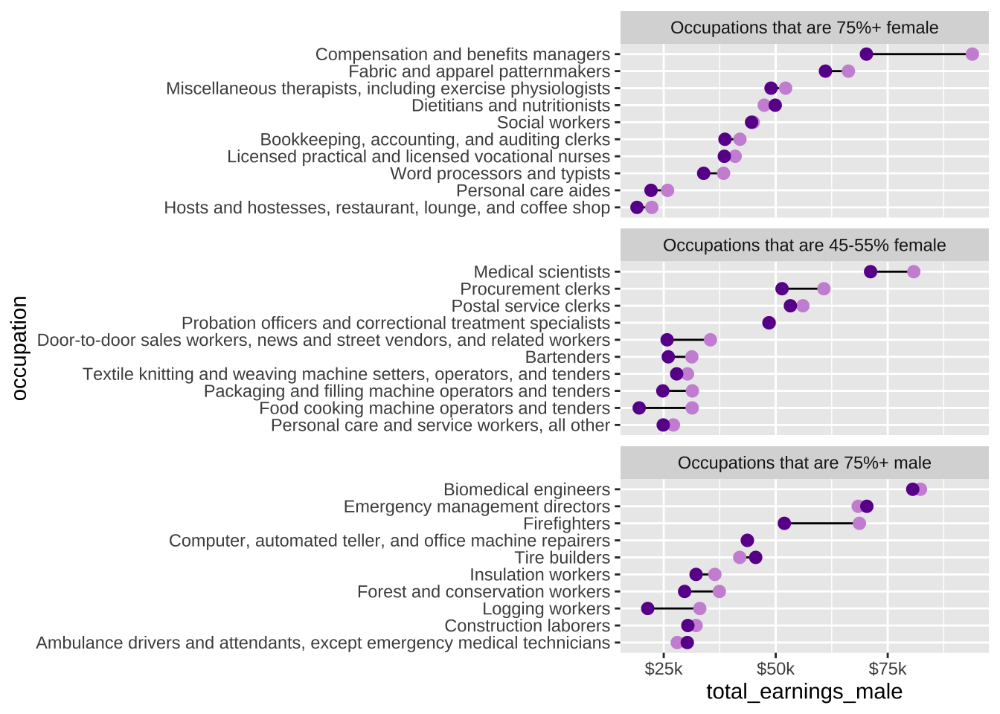
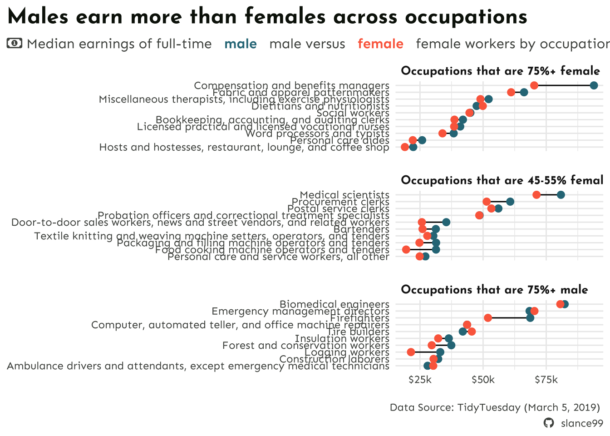

This template follows lecture 6.1 slides. Please be sure to cross-reference the slides, which contain important information and additional context!
System fonts
# import packages ---- library(palmerpenguins)library(tidyverse)# create ggplot to demonstrate use of system fonts ----ggplot(penguins, aes(x = bill_length_mm, y = bill_depth_mm)) +geom_point() +labs(title ="This title is serif font",subtitle ="This subtitle is mono font",x ="This axis label is sans font\n(default)",y ="This axis is also sans font\n(default)") +theme(plot.title =element_text(family ="serif", size =30),plot.subtitle =element_text(family ="mono", size =25),axis.title =element_text(family ="sans", size =22),axis.text.x =element_text(family ="serif", face ="bold", size =18),axis.text.y =element_text(family ="mono", face ="italic", size =18) )
Our “first draft” of this plot began in week 4 during our amounts / rankings lecture. We’ll focus on improving colors and fonts today.
##~~~~~~~~~~~~~~~~~~~~~~~~~~~~~~~~~~~~~~~~~~~~~~~~~~~~~~~~~~~~~~~~~~~~~~~~~~~~~~## setup ----##~~~~~~~~~~~~~~~~~~~~~~~~~~~~~~~~~~~~~~~~~~~~~~~~~~~~~~~~~~~~~~~~~~~~~~~~~~~~~~#..........................load packages.........................library(tidyverse)library(showtext)library(glue)library(ggtext)#......................import Google fonts.......................# `name` is the name of the font as it appears in Google Fonts# `family` is the user-specified id that you'll use to apply a font in your ggpplotfont_add_google(name ="Josefin Sans", family ="josefin") #loading from google fonts, fam = what you want to call it font_add_google(name ="Sen",family ="sen")#....................import Font Awesome fonts...................font_add(family ="fa-brands", #calling from downloaded font file, calling it fa-brands regular = here::here("fonts", "Font Awesome 6 Brands-Regular-400.otf")) font_add(family ="fa-regular", #calling from downloaded font file regular = here::here("fonts", "Font Awesome 6 Free-Regular-400.otf")) font_add(family ="fa-solid", #calling from downloaded font file regular = here::here("fonts", "Font Awesome 6 Free-Solid-900.otf")) #......enable {showtext} rendering for all newly opened GDs......showtext.auto() #turn on show text, need to do before loading text #..........................import data...........................# find import code at: https://github.com/rfordatascience/tidytuesday/tree/master/data/2019/2019-03-05#grab-the-clean-data-herejobs <-read_csv("https://raw.githubusercontent.com/rfordatascience/tidytuesday/master/data/2019/2019-03-05/jobs_gender.csv")
##~~~~~~~~~~~~~~~~~~~~~~~~~~~~~~~~~~~~~~~~~~~~~~~~~~~~~~~~~~~~~~~~~~~~~~~~~~~~~~## wrangle data ----##~~~~~~~~~~~~~~~~~~~~~~~~~~~~~~~~~~~~~~~~~~~~~~~~~~~~~~~~~~~~~~~~~~~~~~~~~~~~~~jobs_clean <- jobs |># add col with % men in a given occupation (% females in a given occupation is already included) ----mutate(percent_male =100- percent_female) |># rearrange columns ----relocate(year, major_category, minor_category, occupation, total_workers, workers_male, workers_female, percent_male, percent_female, total_earnings, total_earnings_male, total_earnings_female, wage_percent_of_male) |># drop rows with missing earnings data ----drop_na(total_earnings_male, total_earnings_female) |># make occupation a factor (for reordering groups in our plot) ----mutate(occupation =as.factor(occupation)) |># classify jobs by percentage male or female (these will become facet labels in our dumbbell plot) ----mutate(group_label =case_when( percent_female >=75~"Occupations that are 75%+ female", percent_female >=45& percent_female <=55~"Occupations that are 45-55% female", percent_male >=75~"Occupations that are 75%+ male" )) ##~~~~~~~~~~~~~~~~~~~~~~~~~~~~~~~~~~~~~~~~~~~~~~~~~~~~~~~~~~~~~~~~~~~~~~~~~~~~~~## create subset df ----##~~~~~~~~~~~~~~~~~~~~~~~~~~~~~~~~~~~~~~~~~~~~~~~~~~~~~~~~~~~~~~~~~~~~~~~~~~~~~~#....guarantee the same random samples each time we run code.....set.seed(0)#.........get 10 random jobs that are 75%+ female (2016).........f75 <- jobs_clean |>filter(year ==2016, group_label =="Occupations that are 75%+ female") |>slice_sample(n =10)#..........get 10 random jobs that are 75%+ male (2016)..........m75 <- jobs_clean |>filter(year ==2016, group_label =="Occupations that are 75%+ male") |>slice_sample(n =10)#........get 10 random jobs that are 45-55%+ female (2016).......f50 <- jobs_clean |>filter(year ==2016, group_label =="Occupations that are 45-55% female") |>slice_sample(n =10)#.......combine dfs & relevel factors (for plotting order).......subset_jobs <-rbind(f75, m75, f50) |>mutate(group_label =fct_relevel(.f = group_label, "Occupations that are 75%+ female", "Occupations that are 45-55% female", "Occupations that are 75%+ male"),occupation =fct_reorder(.f = occupation, .x = total_earnings))
# recreate original plot ----plot <-ggplot(subset_jobs) +# create dumbbells ----geom_linerange(aes(y = occupation,xmin = total_earnings_female, xmax = total_earnings_male)) +geom_point(aes(x = total_earnings_male, y = occupation), color ="#CD93D8", size =2.5) +geom_point(aes(x = total_earnings_female, y = occupation), color ="#6A1E99", size =2.5) +# facet wrap by group ----facet_wrap(~group_label, nrow =3, scales ="free_y") +# "free_y" plots only the axis labels that exist in each group# axis breaks & $ labels ----scale_x_continuous(labels = scales::label_currency(scale =0.001, suffix ="k"),breaks =c(25000, 50000, 75000, 100000))plot

Create new palette
# create a named color palette ----# to avoid some annoying typing, feel free to copy these into our palette vector:# "males" = "#2D7787", "females" = "#FC6B4B", "dark_text" = "#0C1509", "light_text" = "#4E514D"earnings_pal <-c("males"="#2D7787", "females"="#FC6B4B", "dark_text"="#0C1509", #used to color text elements later "light_text"="#4E514D")# preview it ----monochromeR::view_palette(earnings_pal) #prints out palette with variable name too, super nice
Update plot colors & fonts
#.........................create caption.........................github_icon <-""#&#x are to tell r to look for unicode which we got from font awesomegithub_username <-"slance99"caption <- glue::glue("Data Source: TidyTuesday (March 5, 2019) <br> <span style ='font-family:fa-brands;'>{github_icon}; </span> {github_username}"#call two icons above )#........................create subtitle.........................money_icon <-""subtitle <- glue::glue("<span style='font-family:fa-regular;'>{money_icon};</span> Median earnings of full-time <span style='color: #2D7787;'> **male** </span> male versus <span style='color: #FC6B4B;'> **female** </span> female workers by occupation in 2016")#..........................updated plot..........................plot <-ggplot(subset_jobs) +# create dumbbells ----geom_linerange(aes(y = occupation,xmin = total_earnings_female, xmax = total_earnings_male)) +geom_point(aes(x = total_earnings_male, y = occupation), color = earnings_pal["males"], #updating colors to index by males size =2.5) +geom_point(aes(x = total_earnings_female, y = occupation), color = earnings_pal["females"], size =2.5) +# facet wrap by group ----facet_wrap(~group_label, nrow =3, scales ="free_y") +# "free_y" plots only the axis labels that exist in each group# axis breaks & $ labels ----scale_x_continuous(labels = scales::label_currency(scale =0.001, suffix ="k"),breaks =c(25000, 50000, 75000, 100000)) +labs(title ="Males earn more than females across occupations",subtitle = subtitle, caption = caption) +theme_minimal() +theme(plot.title.position ="plot", #moves everything over to the left hand side plot.title =element_text(family ="josefin", #font family imported from google face ="bold",size =18,color = earnings_pal["dark_text"]),plot.subtitle = ggtext::element_textbox(family ="sen",size =11.5,color = earnings_pal["light_text"],margin =margin(t =2, r =0, b =6, l =0 )), #plot breathingplot.caption = ggtext::element_textbox(family ="sen",face ="italic", #sen does not take italic color = earnings_pal["light_text"],margin =margin(t =15),halign =1,lineheight =1.5),strip.text =element_text(family ="josefin",face ="bold", #text above each plot size =10,hjust =0),panel.spacing.y =unit(0.5, "cm"), #space out the panels axis.text =element_text(family ="sen",size =9, #change what the axis text looks like color = earnings_pal["light_text"]),axis.title =element_blank() #get rid of individual plot titles )plot

Save plot as a PNG file
# write plot to file (aka save as png) ----ggsave(filename = here::here("week_6", "images", "salary.png"),plot = plot,device ="png",width =8, height =7,unit ="in")
Turn of {showtext} text rendering
# turn off {showtext} text rendering ----showtext_auto(FALSE)